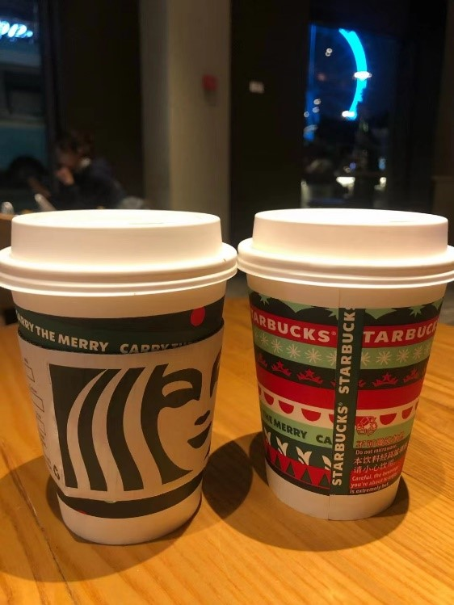
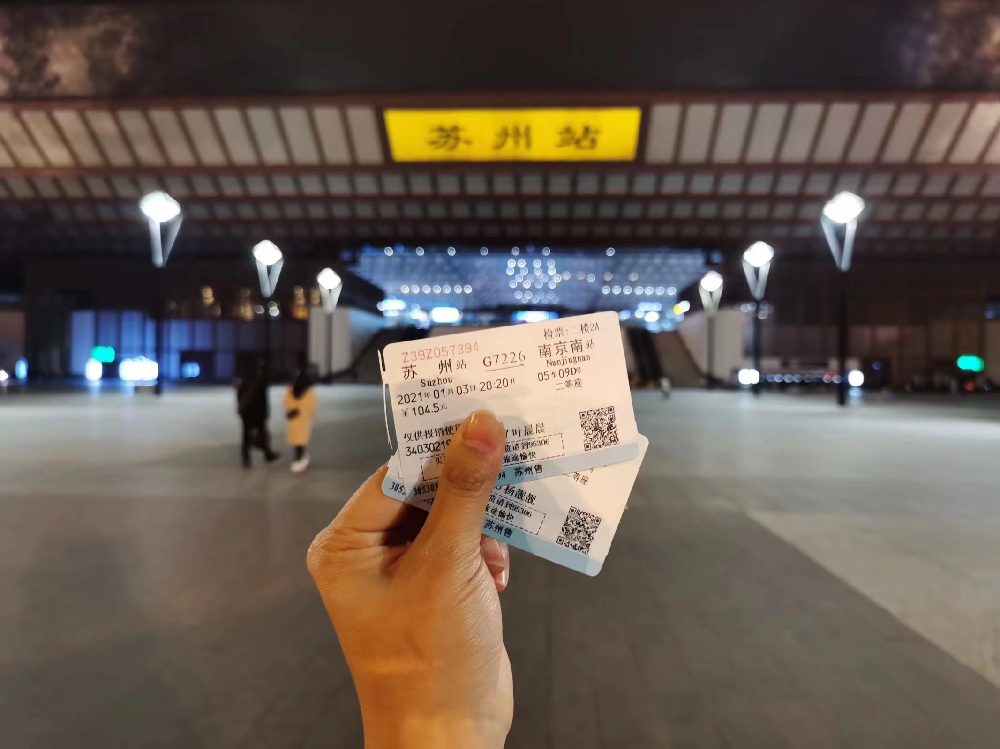
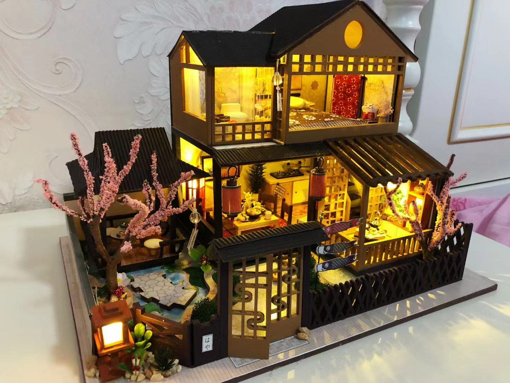
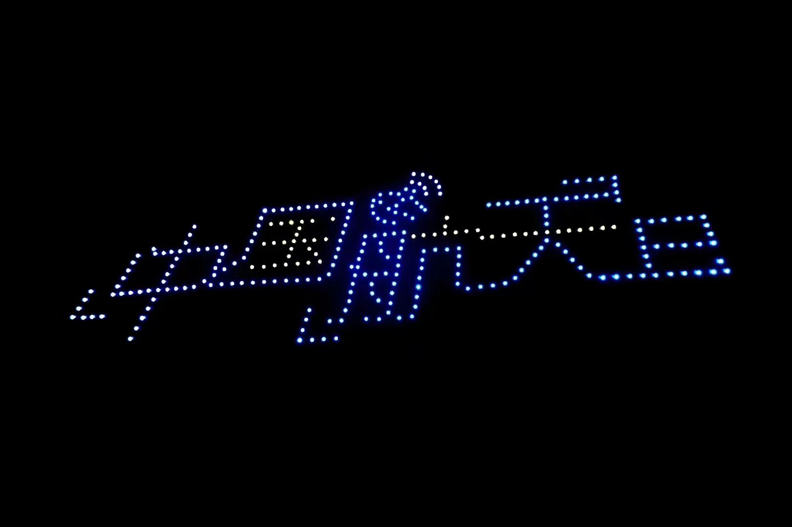
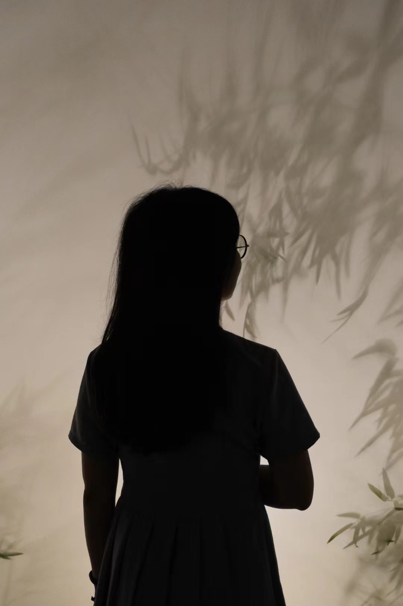
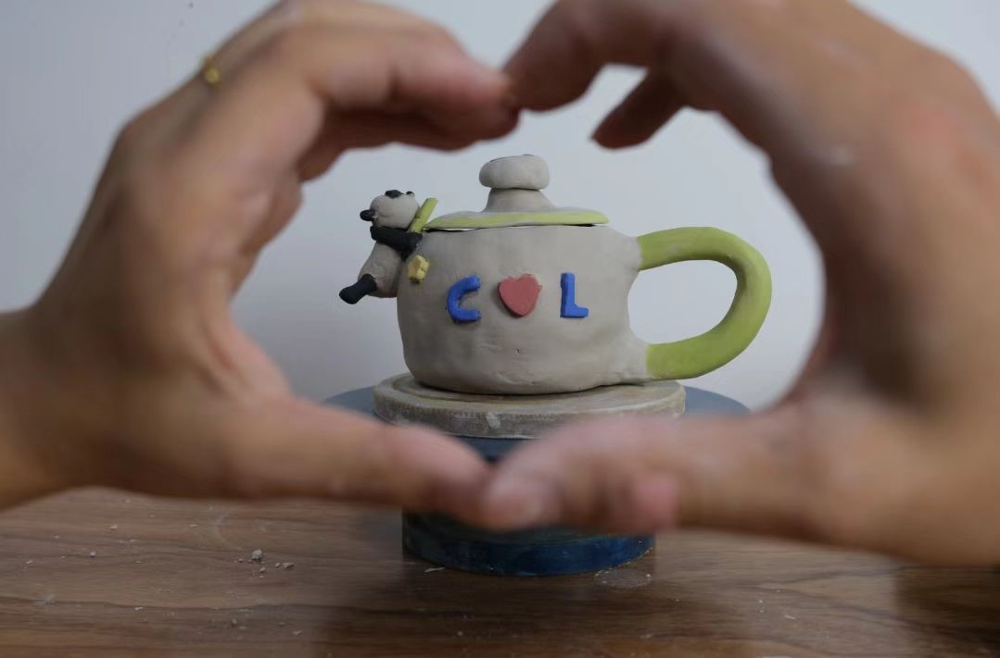
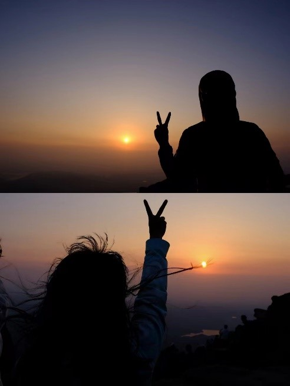
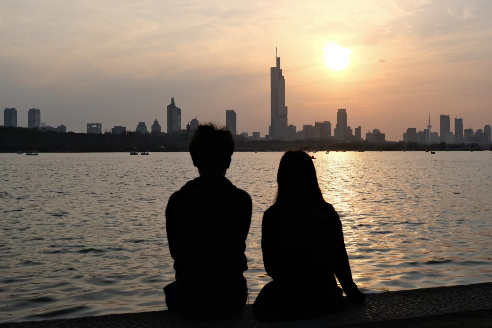

那年今日，
见此良人。
亲爱的靓宝:
在这里，我要先祝靓宝2022年生日快乐！
时光荏苒，岁月如梭，截至2022年5月20日，我们已经恋爱了545天啦。遥想第一次在托乐嘉见到你，仿佛还在昨天，那时候觉得靓宝很可爱、很有意思，可惜那时候我还在长很多痘痘，所以不知道靓宝对我是什么感觉，有点小自卑的赶脚。后来日常的交流发现，靓宝好像对我也有点感觉，随即发起了几次约会。我们一起逛了景枫、看了《除暴》、撞了眼镜。想起第一次作为见面礼送你的MAC口红，这还是我第一次给女生精心挑选礼物，在买之前还问了婕婕姐的看法，直接从官方旗舰店下单的，后来才知道原来买口红之类的化妆品还可以从网上代购。时间过的很快，2020年11月21日，经过我的“不懈努力”，我们在一起了。

第一次和靓宝2020年11月31日跨年，我们去的苏州。到达苏州的第一天，我们先去了平江历史街区，这也是我第一次住景区里的民宿，原来老苏州人就是住在那里的平房里，虽然很古老，但是住着的感觉还是很文青滴。第二天我们打车去了寒山寺，虽然因为打车头晕，中途路上下车走路走到的寒山寺，然后意外的发现靓宝的体力还蛮好的呢，寒山寺感觉主要是名气比较大，看起来也是和一些有名的寺庙差不多。第三天我们去了狮子林和苏州博物馆，狮子林的假山钻来钻去的很有趣，苏州博物馆建筑风格大气简约。第四天去了虎丘，虽然我和靓宝没文化，看不懂虎丘的人文内容，但是那个塔还是蛮神奇的。在苏州的饮食方面，现在还能记住的就是吃了松鼠桂鱼、苏式面、藏书羊肉、锅贴，还有711的手枪腿哈哈哈哈。

2021年2月14日，我和靓宝第一次合作完成的成果诞生了，它是一个耗时五天的DIY小屋，那五天里我骑自行车日常往返八公里，夜以继日地完成小屋的拼装工作。感觉自己还比较心灵手巧，洋洋得意ing…

2021年4月23日，在靓宝的学校第一次看到了无人机表演，那是南航的“中国航天日”无人机表演，第一次这么近距离的观看这么大规模的无人机表演，我也在那天终于搞明白了用单反怎么聚焦和拍照。

还记得第一次用相机拍出令人惊艳的照片还是在南京六朝博物馆的时候，零零散散的竹影搭配上靓宝的背影，一切都显得那么刚刚好。

2021年暑假，因为疫情的缘故，我俩在蚌埠度过了我们的第一个七夕。还记得那段时间还真是一个说走的就走的时间，前一天晚上看到南京疑似有YQ，第二天我俩就请假回了蚌埠，跑路的时间点卡的刚刚好。在蚌埠的那两个月，我少部分时间在应付几个公司的面试，大部分时间都是我俩的约会时间，几次面试结束以后就进入八月假期啦。八月里我们在蚌埠过了一次七夕，那天我们去捏了陶艺，做了一只可爱的小熊猫和小竹笋。

在开学之前，我俩还一起去爬了泰山，从红门到十八盘，一路上确实累得不行，晚上10点多准备上山，最后凌晨三四点到了山顶，也如愿以偿地看到了日出。后来，我们人累得半死，实在扛不住坐汽车回了山下。坊间传闻，一起爬泰山的情侣容易分手，我的理解是那些情侣往往都是酒肉情侣，只能共同吃喝玩乐，不能一起吃苦，爬山路上的苦需要两个人相互帮忙支撑，共同登顶。但是我俩爬山路上相互扶持关照，最终也看到了山顶的日出。（不过我俩认为泰山的风景还是稍逊黄山一筹，果然年轻的时候去过黄山，以后看其他山都比较弱了）

时光如白驹过隙。一晃儿，我们已经在一起五百多天了，回想我们刚认识的时候，还以为在去年，谁知已经是前年的事情了。两年前，我没去过南京的几个地方，一直宅在宿舍。认识你之后，我和你一起走过平江路的街头、吹过玄武湖的春风、目睹泰山顶的日出、划过大明湖的秋水、看过紫金山的夕阳、拾过栖霞山的枫叶。风景因为有你才变得美丽，时光也因为有你才变得珍惜。往后余生，我会用陪伴来表达我对你的爱。悲伤的日子总会过去，希望总在不远处的将来，只要我们为之不懈努力。

爱你的晨晨
2022年5月20日